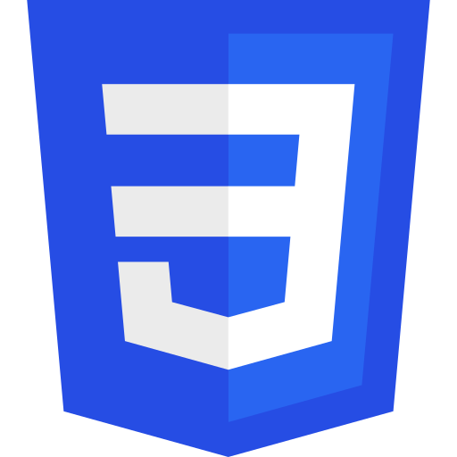
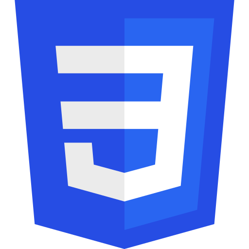

#include <C.h>
My entry into programming started in C by programming microcontrollers to do useful things. I made a few things... Like controlling the temperature of my brew so it never gets cold, or a rev counter for my car.
I’ve made lots of little things, and a good few notable ones.
Dim rs as Recordset
For my current job, I have learnt how to create databases using MS Access, using VBA to do more advanced operations with the applications.
I have created 2 distinct database systems, now critical for the company's daily operations.
using C#;
Mostly whilst learning C#, I created a few small apps. My most prominent application enabled me to migrate an old database to a new one for the business I work for.
new Vector3();
My inspiration for learning C# in the first place... Unity allowed me to very quickly learn the language and really understand how OOP works.
I have created a small demo game, lots of small game mechanic scripts and a UI driven tool which speeds up development of trigger event based games, such as my Horror Demo game.
[HTTPGET()]
Starting early 2022, I have been creating many web applications, using the .NET framework and Angular. I begun by following a Udemy course and created a fully functional website and back-end.
Since my first app, I have created lots of little apps, some of which have been online for use.


 
